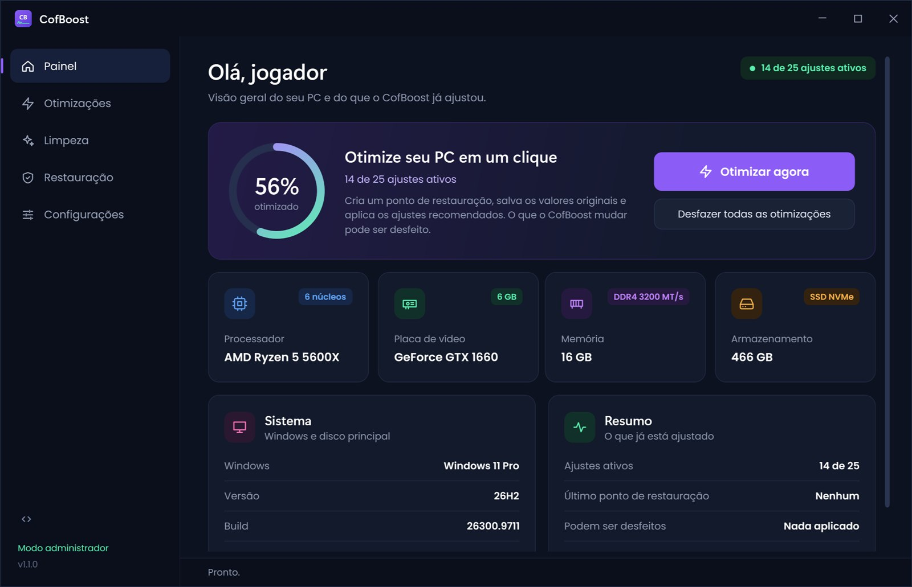

Otimizar agora
Um clique aplica os ajustes recomendados: plano de energia, prioridade para o jogo, GPU, rede e serviços.
O CofBoost ajusta o Windows para jogos: menos travadas, menos input lag e um sistema limpo. Antes de mudar qualquer coisa ele guarda o original, então tudo pode ser desfeito.
Windows 10 e 11, 64 bits. Cerca de 2 MB.

Tudo o que um guia de otimização manda fazer à mão, reunido num app só, com explicação em cada item e um botão para desfazer.
Um clique aplica os ajustes recomendados: plano de energia, prioridade para o jogo, GPU, rede e serviços.
Cada valor original fica salvo. O botão Desfazer devolve exatamente o que estava lá, e o app ainda cria um ponto de restauração.
O código está no GitHub. Dá para ler o que cada ajuste faz, rodar em modo simulação e reportar problemas.
O que você sente como travada é um quadro que demorou demais. Os ajustes do CofBoost atacam o que costuma causar esses picos: economia de energia, tarefas de fundo, gravação em segundo plano e limitação de rede.
O gráfico é uma ilustração. O ganho real depende do seu PC.
Ajustes oficiais do Windows, cada um com explicação. Os recomendados entram no Otimizar agora; os opcionais você liga se quiser.
Libere espaço com um clique por item ou tudo de uma vez. Arquivos em uso são mantidos.
Duas camadas de segurança para você testar sem medo.
Dá para fazer. São dezenas de chaves de registro, serviços e menus escondidos, e nenhum jeito simples de voltar atrás.
| CofBoost | Na mão | Script da internet | |
|---|---|---|---|
| Aplica tudo em um clique | ✓ | — | ✓ |
| Explica o que cada ajuste faz | ✓ | se você pesquisar | — |
| Salva os valores originais | ✓ | — | — |
| Desfaz em um clique | ✓ | — | — |
| Limpeza do sistema junto | ✓ | vários lugares | às vezes |
| Avisa quando sai versão nova | ✓ | — | — |
Um arquivo de cerca de 2 MB, direto do GitHub. Não precisa de nenhum outro programa.
Escolha a pasta e os atalhos. A instalação não pede senha de administrador.
O app cria um ponto de restauração, aplica os ajustes recomendados e avisa se precisa reiniciar.
Se aparecer "O Windows protegeu o computador": isso acontece com programas novos que ainda não têm assinatura digital paga. Clique em Mais informações e depois em Executar assim mesmo. O código é aberto, então você pode conferir tudo o que ele faz.
Grátis, sem cadastro e sem pegadinha. Se não gostar, um clique desfaz tudo.